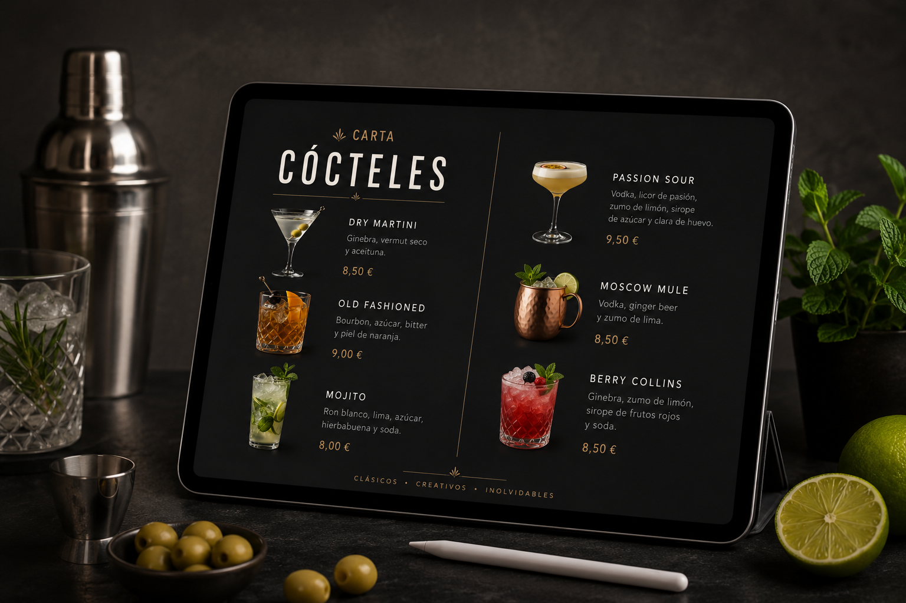

Descripción del producto final
En este proyecto vais a diseñar vuestra propia carta digital de cócteles utilizando herramientas como Canva y Genially.
El objetivo es que podáis crear una carta atractiva, visual y con un acabado lo más profesional posible, aplicando todo lo que iremos aprendiendo sobre coctelería clásica, presentación de bebidas y servicio en bar-cafetería. Además de trabajar los contenidos del módulo, también tendréis la oportunidad de desarrollar vuestra creatividad y vuestro estilo personal.
Estas herramientas se utilizarán porque son intuitivas, fáciles de manejar y cuentan con numerosas plantillas y recursos visuales que os servirán de apoyo durante el diseño. Aun así, tendréis libertad para personalizar vuestra carta y aportar ideas originales.
El trabajo se realizará en grupo, favoreciendo la colaboración y el reparto de tareas, igual que ocurre en un entorno profesional de restauración. Además, al ser herramientas online, podréis acceder a ellas desde distintos dispositivos sin necesidad de instalar programas.
Para la evaluación del proyecto utilizaremos CoRubrics, una herramienta que permitirá trabajar con rúbricas digitales y participar tanto en la autoevaluación como en la coevaluación. De esta forma, no solo presentaréis un producto final, sino que también reflexionaréis sobre vuestro propio trabajo y el de vuestros compañeros.
La finalidad de esta actividad es acercaros a una situación real del sector hostelero, potenciando vuestra creatividad, el trabajo en equipo y el uso de herramientas digitales aplicadas al ámbito profesional.
